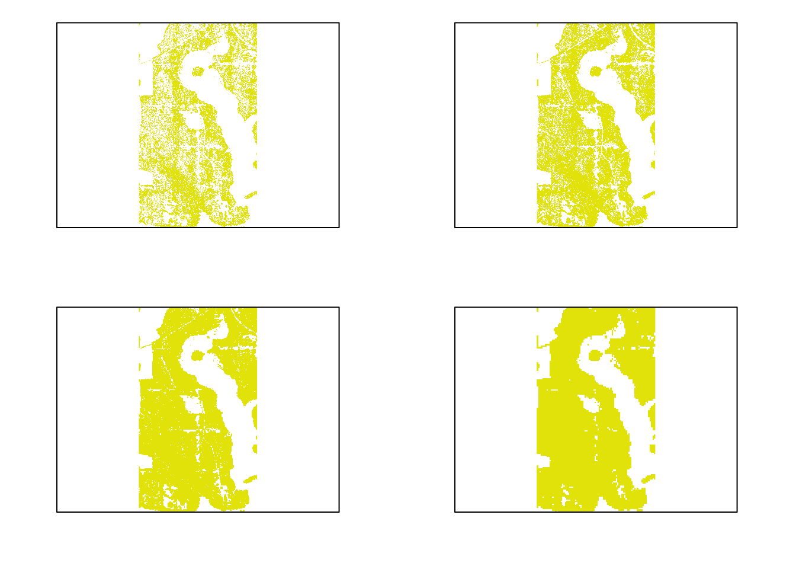
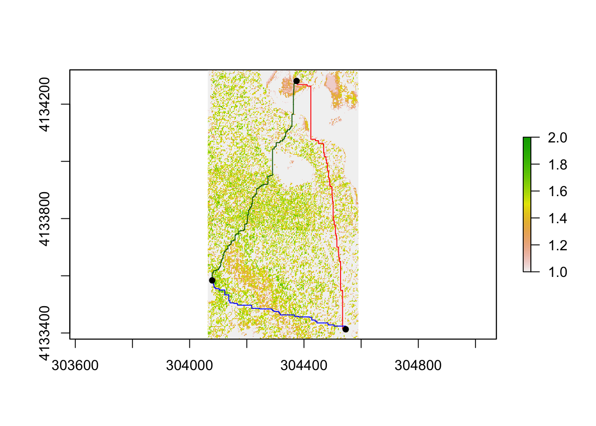
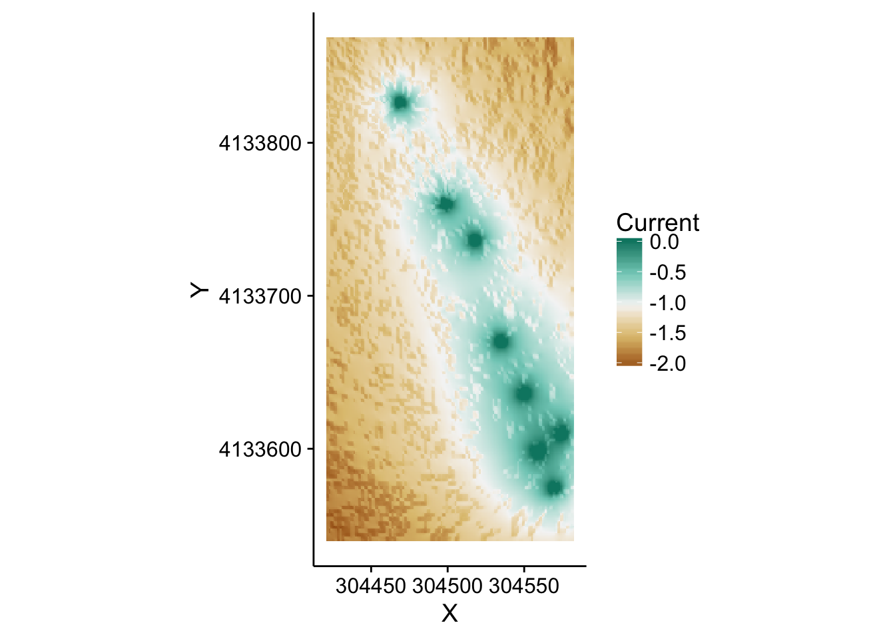
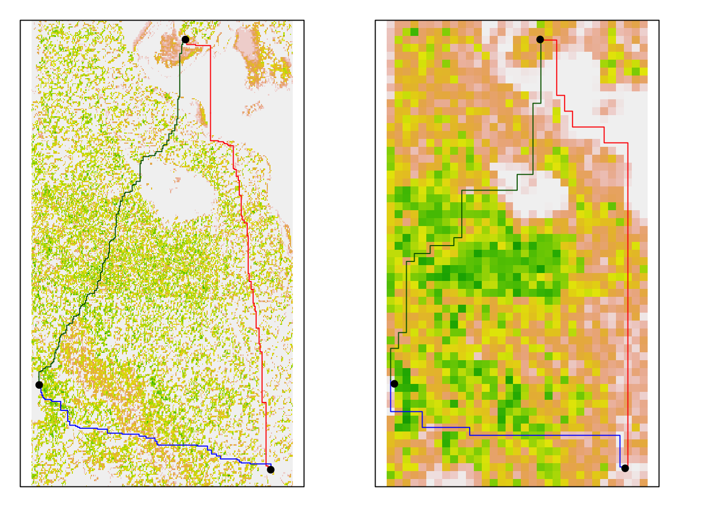
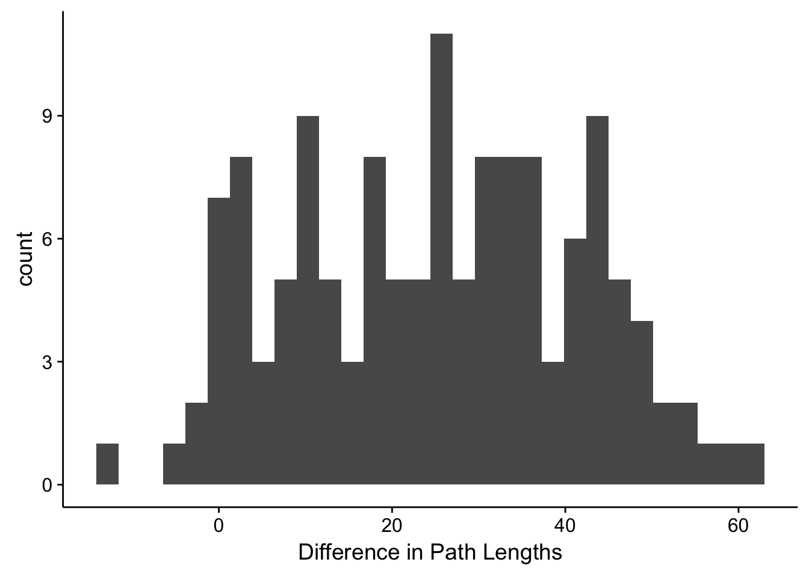
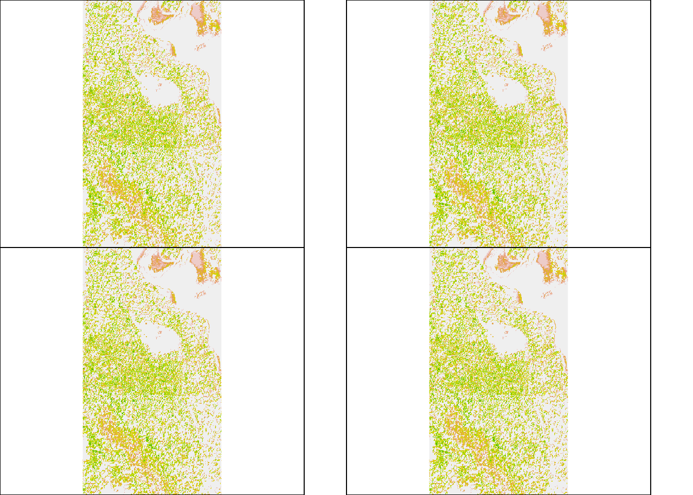
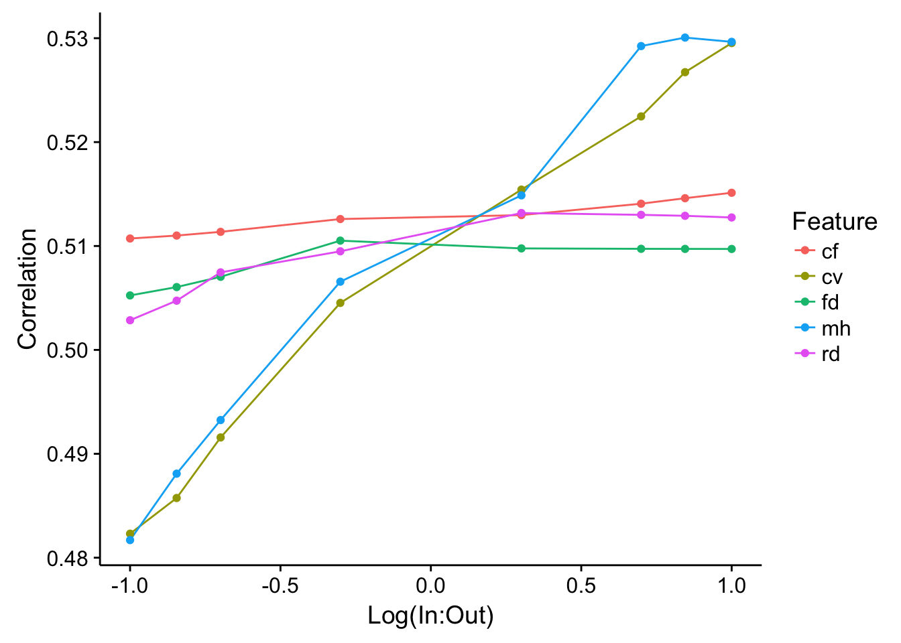
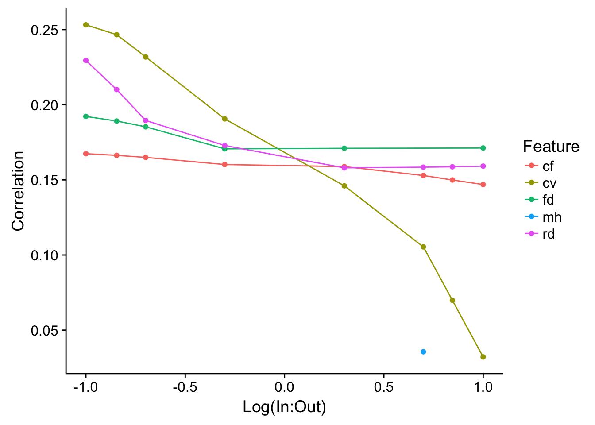
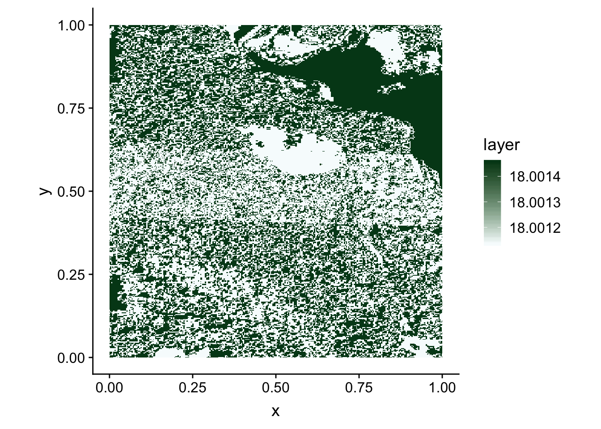

3 Resistance Models

3.1 Synopsis
One of the characteristics of landscape genetics studies, maybe even a defining feature, is its use of resistance and distance approaches to understanding the spatial distribution of genetic structure and hopefully to use it in support of characterizing landscape mediated connectivity. In this activity, we will explore how to characterize and estimate separation and delve into a approaches for understanding how we can analyze similarly defined genetic distances.
3.2 Objectives
In this section, we focus on the characterization and analysis of distance matrices. By the time you finish this activity, you should be able to:
- Create, develop, and manipulate matrices and rasters to be used in resistance modeling analyses.
- Understand and use alternative methods for estimating separation among locations using resistance rasters
- Examine different statistical models applicable to distance-based resistance modeling.
3.3 Resistance Costs
The data set that we are going to be using consists of several a set of Cornus florida trees, acting as pollen recipients. These trees are situated on ~170ha site, co-distributed with Ilex species in the understory and over-topped with both Pinus and Quercus canopy dominants. Seeds were collected from several maternal individuals, germinated, and genotypes. These data were collected to examine pollen-mediated gene flow. Maternal locations are considered as spatial sampling of a ‘pollen pool’, whose spatial structure is determined by the physical and spatial separation of pollen donor and recipient trees. In addition to the genetic and spatial data, the following features were also measured using remote sensing (LiDAR & Hyper-spectral Imaging):
- General Features
- Euclidean distance
- Elevation similarity.
- Forest Canopy Features
- Coniferous vegetation (cv)
- Mixed hardwoods (mh)
- Open field (fd)
- Forest Understory Features
- Roads (rd)
- Cornus canopies (cf)
These layers are provided in the data/dogwood folder as *.asc raster files.
Resistance is a cost associated with movement across a landscape. In the context of landscape genetics, we assume that this parameter is what is influencing connectivity. As a raster, resistance is represented by the values stored in a raster. A feature on the landscape may either promote or retard movement. The greater the value, the more effects that may have on movement across the pixel. The example below shows conifer canopy structure across the study area. It can be that movement is hindered under the conifer canopy (left) or it could be restricted moving outside the conifer canopy (right).
Figure 3.1: Mirror resistance rasters based upon the presence of conifer canopy structure.
The data we use for parameterizing resistance rasters may come from many different sources. The key here is that the proper set of features influencing connectivity and their individual interactions and resistance values are those that best describe the spatial distribution of genetic variation. The genotypes and where they are located are the answer, resulting from the demographic processes we are trying to analyze. Theory surrounding resistance derivations for connectivity are still being actively developed, so pay attention to the literature exciting developments are ahead.
We can derive resistance rasters from many sources. They may be hand digitized, wherein features of the landscape are manually mapped onto a raster. The kinds of features most easily hand digitized are those that are large in extent and continuous such as roads, barriers, rivers, and other features of course granularity.
Climatic data, commonly parameterized in terms of precipitation and temperature, can algorithmically derive raster cost surfaces. The accuracy of these rasters depend largely upon the region of the earth being modeled, the density of weather monitoring stations, and volatility of weather in that location. The most popular provider of climactic data is WorldClim, from which the rasters you worked with on Monday were provided.
Increasingly, remotely sensed data sources are being used to incorporate information into resistance rasters. Platforms collecting remotely sensed data may be satellites, fixed wing aircraft, balloons, unmanned aircraft (drones), and even hand carried devices. The rasters provided were collected by fixed wing aircraft.
3.3.1 Working with Remotely Sensed Data
LiDAR data generally comes in *.las or *.laz files and will have gone through some pre-processing such that each return will have an x,y, and z coordinate. Depending on the LiDAR sensor there may also be data defining the return number, intensity of the return, R,G,B data, or other classifications of ground and non-ground returns.
LAS files can easily have millions, or billions, of points and thus are generally very large. We will be working with data set that has been subset to a more manageable size. The original LAS files were clipped to an area of interest using LAStools which is available at https://rapidlasso.com/lastools/ There is a GUI for Windows operating systems and can be run via command line on Mac.
Depending on the data source, certain classifications may have already been assigned to returns such as ground (=2) and non-ground (=1). If data is not classified as ground/not ground you will need to run lasground which will extract ground points from you data set. Subsequently las height will determine the height above ground of each return. Next LASclassify will allow you to extract horizontal slices from the point cloud.
There are two example *.las files, lowvegetation.las and mediumvegetation.las in the folder data/lidar/ that you can look at later. Given the size of these files and the time it takes to translate them into rasters, we have provided pre-existing rasters with 0.5 m spatial resolution in the same folder. There are three, High05.asc, Med05.asc and Low05.asc and they can be loaded in just like any other raster. Here is the medium vegetation layer, depicting LiDAR returns in a band that is between 3.5 - 11m above the ground, presumably the space through which the pollinators will be moving. The values in the cells of this raster are the elevation of the LiDAR return and are only salient to us if we make them all the same, indicating the presence/absence of a return rather than the elevation that it was recorded as.
## class : RasterLayer
## dimensions : 2883, 1664, 4797312 (nrow, ncol, ncell)
## resolution : 0.5, 0.5 (x, y)
## extent : 303969.6, 304801.6, 4133236, 4134677 (xmin, xmax, ymin, ymax)
## coord. ref. : NA
## data source : in memory
## names : Med05
## values : 1, 1 (min, max)This is quite a detailed raster, much more detailed in scale than the pines one above. Given the small pixel size, you may need to zoom the raster image a bit to see the details.
plot( medVeg )
The difference in the pine and medVeg raster resolutions brings up a salient point, and one that is perhaps not as well appreciated in the literature as it should be. The LiDAR returns are very fine grained, whereas the hyperspec data that created the pine raster was more course grained. However, which grain is most important for to the organism that is participating in the movement of genetic materials? It may be that for some features, organisms perceive the environment at one level of granularity and for other features they react to a different scale.
We would have to tune our analyses such that we can determine which pixel size is most important. Functionally, this is accomplished using the aggregate function, supplied with a factor (e.g., the neighborhood size to aggregate) and a function (in this case we used the max function).
medVeg1 <- aggregate(medVeg, fact=2, FUN=max)
medVeg2 <- aggregate(medVeg, fact=4, FUN=max)
medVeg5 <- aggregate(medVeg, fact=10, FUN=max)
medVeg10 <- aggregate(medVeg, fact=20, FUN=max)The differences between can easily be visualized.
par(mfrow=c(2,2), mai=c(0.5,0.5,0.2,0.2))
plot(medVeg1, legend=FALSE, axes=FALSE)
plot(medVeg2, legend=FALSE, axes=FALSE)
plot(medVeg5, legend=FALSE, axes=FALSE)
plot(medVeg10, legend=FALSE, axes=FALSE)
The salient point here is that the aggregate factor itself may be a parameter that we need to estimate during our analyses. The easiest way to do this is to build your rasters across a range of granularity and let the analyses sort out which is the most salient scale to use. We will see this approach again when we discuss the magnitude of raster costs.
3.4 Estimating Distances on Resistance Rasters
Once we have defined one or more rasters quantifying resistance costs, we can go and estimate the distance among points on those rasters. There are several ways available for us to estimate distance. The differences in these methods are based upon the algorithm used to estimate separation and the extent of the raster used to apply these algorithms. These methods are buttressed on each end by:
- Least Cost Path: An optimum solution, attempting to find the shortest cost path between two points. This algorithm may produce asymmetric paths (e.g., the total cost to a location may not be the same as the distance from a location) depending on how the underlying raster is configured.
- All Paths (CircuitScape): This algorithm attempts to capture the way in which the entire landscape influences connectivity by integrating all the potential paths between locations.
These algorithms may be given the entire raster to work with or may be constrained. Some examples of constraints are items on the landscape that are impassible (e.g., a rock), either by having missing data in the raster itself or a value of resistance that makes it impossible to be considered part of a potential path. Other approaches may include the addition of corridors, within which paths may be constrained to move. These configurations are implemented by crafting additional spatial objects in the same raster space as your cost rasters.
As a last word of concern, you should also consider reducing the extent of your raster as much as feasible. The actual algorithm that estimates path distances (for least cost at least) is one that increases in complexity, time, and memory with the cube of the number of pixels! Similar scaling issues are involved with solving the linear equations necessary for the all paths problem. \(N^3\) increases rapidly, so everything you can do to constrain its magnitude helps.
3.4.1 Least Cost Distance
A least cost path is the route between two points, say \(A \to B\), whose length is minimal. This is the optimal route across the landscape. Organisms or vectors of gene exchange may, or may not, move across a landscape following an optimal path.

Figure 3.2: Estimation algorithm for least-cost path distance. The path chosen is the one with the shortest overall distance, or at least one of the paths with equally short overall distances.
One way to estimate distances in R, is through the use of the gdistance library. In this approach, we define a transition object based upon:
1. The cost distance raster. By default, the transition() function works on conductance, which is the inverse of resistance. In these examples, we have used a single raster, though use of RasterBrick objects is just as appropriate. 2. The function by which we estimate the pixel-to-pixel distances.
3. The neighborhood around each pixel that we look at during each step. Options for this include:
- A von Neumann neighborhood (directions=4) consists of the pixels immediately above, below, and on both sides of the target pixel.
- A Moore’s neighborhood (directions=8) consisting of all pixels surrounding the target pixel (e.g., even the diagonal ones) - A Knight & One-Cell Queen move (directions=16), which adds the next layer of cells outside of Moore’s neighborhood.
Once estimated, the transition object must be corrected for if you are either using a large extent based upon Latitude and Longitude datum (e.g., they are not unit-wise consistent in area), or you have used a direction option other than the von Neuman Neighborhood.
In the example below, I use the cost distance estimated as an absolute distance with a resistance cost of 2:1.
require(gdistance)
pine <- pines + 1
tr <- transition( 1/pine, transitionFunction = mean, directions=4 )
tr <- geoCorrection( tr, type="c", multpl=FALSE, scl=FALSE)
tr## class : TransitionLayer
## dimensions : 941, 527, 495907 (nrow, ncol, ncell)
## resolution : 1.000212, 1.000212 (x, y)
## extent : 304063.4, 304590.5, 4133379, 4134320 (xmin, xmax, ymin, ymax)
## coord. ref. : NA
## values : conductance
## matrix class: dsCMatrixIn using the transition function, you must either invert the distance matrix
tr <- transition( 1/pine, transitionFunction = mean, directions=4 )or you can invert the transitionFunction itself.
tr <- transition(pine, transitionFunction = 1/mean, directions=4 )After correcting, the tr object is a raster of class TransistionLayer whose values denote the conductance across the landscape
tr## class : TransitionLayer
## dimensions : 941, 527, 495907 (nrow, ncol, ncell)
## resolution : 1.000212, 1.000212 (x, y)
## extent : 304063.4, 304590.5, 4133379, 4134320 (xmin, xmax, ymin, ymax)
## coord. ref. : NA
## values : conductance
## matrix class: dsCMatrixThe size of the data within the transition matrix is a bit telling about why it takes a bit of time to estimate these objects. The cost raster itself has 941 rows and 527 columns. The transition matrix, tr, has the values of conductance stored for all (well, almost all) pairs of points on that surface in a matrix with 495907 rows and columns. That is rdim(tr@transitionMatrix)[1]^2 estimates! Again, this is why it is important to make sure you are working with raster extents that are sufficiently large to capture the area relevant to connectivity but not so large as to have areas that are irrelevant. Those irrelevant components of your landscape will still be used to estimate transition matrices!
The shortest paths can be visualized as
coords <- cbind( x=c(304374,304546,304079),
y=c(4134281,4133413,4133584))
pts <- SpatialPoints( coords )
path.1 <- shortestPath( tr, pts[1], pts[2], output="SpatialLines")
path.2 <- shortestPath( tr, pts[2], pts[3], output="SpatialLines")
path.3 <- shortestPath( tr, pts[3], pts[1], output="SpatialLines")
plot( pine )
lines( path.1, col="red")
lines( path.2, col="blue")
lines( path.3, col="darkgreen")
points( pts, pch=16, col="black")
The distances along those paths is estimated, in a pair-wise fashion, as
d.lcp <- costDistance(tr, pts)
d.lcp## 1 2
## 2 1045.1439
## 3 1012.7618 659.2799which is exactly what we need for incorporating ecological separation into models of connectivity.
I should raise an important point here about the form of that matrix. The order of rows and columns follow the order of the coordinates that are passed to the shortestPath function. This will be the same order of stratum that you need to use for estimating both the other ecological/spatial distances as well the genetic distances. I find it helpful to add rowname and colname attributes to these matrices to make sure the orders are correct in subsequent analyses.
3.4.2 All Paths (CircuitScape) Distances
The All Paths distance is estimated using the same approaches as for the Least Cost Paths, a transition matrix should be created and corrected and SpatialPoints will be used to estimate separation. There are two main differences. First, the geoCorrection function, uses a different type of correction, set it to type='r' from type='c'. Next, the pairwise distance between these locations are estimated by communteDistance instead of costDisance.
Here is an example using the same points.
tr.ct <- transition( 1/pine, transitionFunction = mean, directions=4 )
tr.ct <- geoCorrection( tr.ct, type="r", multpl=FALSE, scl=FALSE)
d.ct <- commuteDistance(tr.ct, pts)
d.ct## 1 2
## 2 8085689
## 3 7574426 6738172You can also estimate all paths distance using the program CircuitScape by Brad McRae. Circuitscape, a stand alone Java application and you should have downloaded it and have it on your computer. What we need to run it is the cost raster and the points you are using, also as a raster, saved in ascii format.
To demonstrate the use of CircuitScape, we will use a slightly larger data set for the point locations. This raster must be identical in both extent and granularity for the analysis to work. The function rasterize takes some points and a raster and returns a correctly scaled raster with the points indicated as the only non-NA pixels on the raster.
trees <- read.table("./data/dogwood/tree_coords.txt")
trees <- SpatialPoints( trees[,2:3] )
trees_raster <- rasterize( x=trees, y=pines )
trees_raster## class : RasterLayer
## dimensions : 941, 527, 495907 (nrow, ncol, ncell)
## resolution : 1.000212, 1.000212 (x, y)
## extent : 304063.4, 304590.5, 4133379, 4134320 (xmin, xmax, ymin, ymax)
## coord. ref. : NA
## data source : in memory
## names : layer
## values : 1, 17 (min, max)We can write both of these rasters as ascii files.
writeRaster(trees_raster,"trees_rast.asc",overwrite=TRUE)
writeRaster(pine,"pine_rast.asc",overwrite=TRUE)Then start Circuitscape and set the following parameters:
1. Choose Step 1: Raster 2. Choose Step 2: All pairs 3. Use the file section buttons to load in both the cost and site rasters. 4. Select an output location (it will create a lot of files), I called it ‘trees’ (the results are saved with that as a file prefix). 5. Selection the option to save a current map. 6. Hit Run.
It will take a bit of time, it has to estimate distances across all pairs of points. When it finishes, it will produce a lot of files, two of which we are interested in working with. The first is the circuit distance data file. There are two version of this file, one with distances in column format (trees_resistances_3columns) and the other as a matrix (trees_resistance). If you named the output location something other than ‘tree’, it will be prefixed with that name instead—it will be obvious due to the huge number of files that appeared in your folder which ones to look at.
The next file, which is much more interesting to look at, is a raster map of the current, as it was estimated across the landscape. Is should be saved as trees_cum_curmap.asc file. You can load that one as a normal raster.
pine.current <- raster("./spatial_data/trees_cum_curmap.asc")The surface of the current raster is definitely not smooth. Here is a blown up region of the raster around some focal trees. The cumulative effect of all paths across the landscape make a rugose topology.
e <- extent( c( 304421, 304583, 4133540, 4133869) )
pine.portion <- crop( pine.current, e )
df <- data.frame( rasterToPoints(pine.portion) )
names(df) <- c("X", "Y", "Current")
df$Current <- log( df$Current)
df$Current[ df$Current > 0 ] <- 0
ggplot(df, aes(X,Y,fill=Current)) + geom_tile() + scale_fill_gradientn( colors=c('#a6611a','#dfc27d','#f5f5f5','#80cdc1','#018571')) + coord_equal()
3.4.3 Logistical Issues
Estimation of these values is not a rapid endeavor. For the relatively small raster we used in these examples and using only three points, the time to complete the estimation (in seconds) for both algorithms on my laptop was:
| Algorithm | K | Duration |
|---|---|---|
| Least Cost Path | 3 | 11.773 |
| All Path (CircuitScape) | 3 | 17.765 |
The CircuitScape algorithm takes a slightly different approach in estimating the distances than the gdistance and also takes a bit of time to run.
3.4.4 Pixel Size and Path Lengths
As mentioned in the context of remote sensing above, pixel size also influences both the path across the landscape as well as its magnitude.
Here we can estimate paths between the three example points measured on two different pixel sizes, 1x and 10x.
tr1 <- transition( 1/pine.p1, transitionFunction = mean, directions=4 )
tr1 <- geoCorrection( tr1, type="c", multpl=FALSE, scl=FALSE)
path.p11 <- shortestPath( tr1, pts[1], pts[2], output="SpatialLines")
path.p12 <- shortestPath( tr1, pts[2], pts[3], output="SpatialLines")
path.p13 <- shortestPath( tr1, pts[3], pts[1], output="SpatialLines")
tr2 <- transition( 1/pine.p4, transitionFunction = mean, directions=4 )
tr2 <- geoCorrection( tr2, type="c", multpl=FALSE, scl=FALSE)
path.p21 <- shortestPath( tr2, pts[1], pts[2], output="SpatialLines")
path.p22 <- shortestPath( tr2, pts[2], pts[3], output="SpatialLines")
path.p23 <- shortestPath( tr2, pts[3], pts[1], output="SpatialLines")
par( mfrow=c(1,2), mar=rep(1,4))
plot( pine , legend=FALSE, axes=FALSE)
lines( path.p11, col="red")
lines( path.p12, col="blue")
lines( path.p13, col="darkgreen")
points( pts, pch=16, col="black")
plot( pine.p4 , legend=FALSE, axes=FALSE)
lines( path.p21, col="red")
lines( path.p22, col="blue")
lines( path.p23, col="darkgreen")
points( pts, pch=16, col="black")
Increasing the coarseness also changes the overall separation of points on the landscape, inserting positive bias.
d1 <- as.matrix( costDistance(tr1, trees) )
d2 <- as.matrix( costDistance(tr2, trees) )
df <- data.frame( Diff = d2[lower.tri(d2)] - d1[lower.tri(d1)] )
ggplot( df, aes( Diff ) ) + geom_histogram(bins=30) + xlab("Difference in Path Lengths")
Unfortunately, there is no way, a priori what the proper pixel size should be, only the data can give suggestions.
3.4.5 Scaling Resistance
In our examples thus far, we have assumed that the presence feature of interest was twice as costly to traverse than the landscape outside the feature. The pine raster has a \(1.0\) where there is no conifer canopy and a value of \(2.0\) under the pine trees. However, there is no a priori reason why this is the correct scaling of cost as it pertains to the movement of pollen—it could just as easily be 1:10 or 1:100. It could also be, as in the first figure above that the cost is accumulated for not moving under the conifer canopy, in which it would be a ratio of 2:1, 10:1, or 100:1. If we do not have a biologically motivated reason for assigning specific values to cost resistance, it is probably best to examine a range of potential values and let the genetic data provide suggestions regarding which would be the most explanatory.
Scaling matrices can be done as either statically scaling the values or by allowing the values in neighboring cells to influence each other, similar to say neighborhood effects.
pine.2 <- pine
pine.5 <- ( pine - 1 ) * 4 + 1
pine.10 <- ( pine - 1 ) * 9 + 1
pine.100 <- ( pine - 1 ) * 99 + 1
par(mfrow=c(2,2), mai=c(0,0,0,0))
plot(pine.2, legend=FALSE, axes=FALSE)
plot(pine.5, legend=FALSE, axes=FALSE)
plot(pine.10, legend=FALSE, axes=FALSE)
plot(pine.100, legend=FALSE, axes=FALSE)
Smoothing is a way to modifying cells of a raster based upon the immediate neighbors. In this case, we can take the average of the eight surrounding cells and apply that value to the center cell. The focal function take the target raster, a 3x3 matrix of values indicating the amount each of the neighboring cells contribute to the characteristics of the target cell, and a function to use to determine the value assigned to the central cell. In this case, we use mean, though you could use max or other user defined functions. The net effect of this approach is to take the ‘rough edges’ out of the raster and smooth the transitions. It also expands the spatial extent of the feature into surrounding cell.
w <- matrix( 1, nrow=3, ncol=3)
pine.smooth <- focal( pine.2 , w , fun=mean)
par(mfrow=c(1,2), mai=c(0,0,0,0))
plot( pine.2, legend=FALSE, axes=FALSE)
plot( pine.smooth, legend=FALSE, axes=FALSE )3.4.6 Final Thoughts on Raster Manipulations
The granularity, scale, cost, algorithm, and scaling of rasters that best describe the observed genetic structure are most likely the ones that we can designate as the most ‘biologically meaningful.’ How we determine which of the many potential combinations is actually the most relevant depends upon fitting the distance matrices to the genetic data.
3.5 Resistance Models
Once we have a set of candidate loci, we can then start the analyses. There are several ways to evaluate these matrices, most of which are based upon looking for systematic changes in genetic distance that correspond with changes in one or more of the predictor raster distances.
3.5.1 The Mantel Test
One of the most common approaches to evaluating the extent to which resistance distances are correlated with genetic distances is via the Mantel Test. It estimates a parameter, \(Z\), as the element-wise product of both matrices.
\[ Z = \sum_{i=1}^N\sum_{j=1}^N x_{ij}*y_{ij} \]
and then invokes the null hypothesis, \(H_O:\)The values in the matrices are independent. If this is true then large values in \(\mathbf{X}\) should be randomly associated with all the values in \(\mathbf{Y}\). However, if there is an association than large values in one matrix may be associated with large ones in the other (for a positive correlation) or small in one may be associated with large in another (for a negative correlation). If \(H_O\) is true, then any permutation of \(\mathbf{X}\) and a re-estimation of \(Z\) should produce values as large (or small) as the observed \(Z\) value. Sounds simple, no? It also estimates a correlation coefficient, the default is a Pearson Product Moment though you can specify Spearman’s \(\rho\) or Kendall’s \(\tau\) as well. There are a few different implementations of the Mantel, the one I’m using below is the one from the vegan library. Here is the documentation for the function that provides a bit more information.
mantel {vegan} R Documentation
Mantel and Partial Mantel Tests for Dissimilarity Matrices
Description
Function mantel finds the Mantel statistic as a matrix correlation between two dissimilarity matrices, and function mantel.partial finds the partial Mantel statistic as the partial matrix correlation between three dissimilarity matrices. The significance of the statistic is evaluated by permuting rows and columns of the first dissimilarity matrix.
Usage
mantel(xdis, ydis, method="pearson", permutations=999, strata = NULL,
na.rm = FALSE, parallel = getOption("mc.cores"))
mantel.partial(xdis, ydis, zdis, method = "pearson", permutations = 999,
strata = NULL, na.rm = FALSE, parallel = getOption("mc.cores"))
Arguments
xdis, ydis, zdis
Dissimilarity matrices or a dist objects.
method
Correlation method, as accepted by cor: "pearson", "spearman" or "kendall".
permutations
a list of control values for the permutations as returned by the function how, or the number of permutations required, or a permutation matrix where each row gives the permuted indices.
strata
An integer vector or factor specifying the strata for permutation. If supplied, observations are permuted only within the specified strata.
na.rm
Remove missing values in calculation of Mantel correlation. Use this option with care: Permutation tests can be biased, in particular if two matrices had missing values in matching positions.
parallel
Number of parallel processes or a predefined socket cluster. With parallel = 1 uses ordinary, non-parallel processing. The parallel processing is done with parallel package.
Details
Mantel statistic is simply a correlation between entries of two dissimilarity matrices (some use cross products, but these are linearly related). However, the significance cannot be directly assessed, because there are N(N-1)/2 entries for just N observations. Mantel developed asymptotic test, but here we use permutations of N rows and columns of dissimilarity matrix. See permutations for additional details on permutation tests in Vegan.
Partial Mantel statistic uses partial correlation conditioned on the third matrix. Only the first matrix is permuted so that the correlation structure between second and first matrices is kept constant. Although mantel.partial silently accepts other methods than "pearson", partial correlations will probably be wrong with other methods.
The function uses cor, which should accept alternatives pearson for product moment correlations and spearman or kendall for rank correlations.
Value
The function returns a list of class mantel with following components:
Call
Function call.
method
Correlation method used, as returned by cor.test.
statistic
The Mantel statistic.
signif
Empirical significance level from permutations.
perm
A vector of permuted values. The distribution of permuted values can be inspected with permustats function.
permutations
Number of permutations.
control
A list of control values for the permutations as returned by the function how.
Note
Legendre & Legendre (2012, Box 10.4) warn against using partial Mantel correlations.
Author(s)
Jari Oksanen
References
The test is due to Mantel, of course, but the current implementation is based on Legendre and Legendre.
Legendre, P. and Legendre, L. (2012) Numerical Ecology. 3rd English Edition. Elsevier.
See Also
cor for correlation coefficients, protest (“Procrustes test”) for an alternative with ordination diagrams, anosim and mrpp for comparing dissimilarities against classification. For dissimilarity matrices, see vegdist or dist. See bioenv for selecting environmental variables.
Examples
## Is vegetation related to environment?
data(varespec)
data(varechem)
veg.dist <- vegdist(varespec) # Bray-Curtis
env.dist <- vegdist(scale(varechem), "euclid")
mantel(veg.dist, env.dist)
mantel(veg.dist, env.dist, method="spear")
[Package vegan version 2.4-0 Index]
Since it takes a bit of time to extract the distance matrices from the rasters, we have provided some pre-configured distance matrices for the trees identified above. These rasters are located in the data/dogwood folder. For these rasters we estimate cost distance across a range of values representing both avoidance (10:1, 7:1, 5:1, and 2:1) and preference (1:2, 1:5, 1:7 1:10) of the feature.
Each distance matrix is in a single file, the name of which records the algorithm (lcp vs. ct), the feature (cf, cv, rd, fd, mh from above), and the costs of out.in. For example, the file ct.cf.1.5.rda is the Circuit Theory, Cornus florida feature with costs of 1 in the feature and 5 outside of it.
In the following code, I loop through the files estimated using the least cost path approach (pattern='lcp*'). For each file, I break apart the file name and record the feature type, the in cost, the out cost, the algorithm used to estimate distances, and the correlation.
lcp.files <- list.files("./data/dogwood/", pattern="lcp*", full.names = TRUE)
library(vegan)
df <- data.frame( File=lcp.files,
Feature=NA,
In=NA,
Out=NA,
Type="Least Cost",
Correlation=NA,
P=NA)
load( "./data/dogwood/G.rda")
for( path in lcp.files) {
file <- strsplit( path, split="/")[[1]][5]
components <- strsplit(file, split=".",fixed=TRUE)[[1]]
load( path )
fit <- mantel( as.dist( G ), as.dist( D ))
idx <- which( df$File == path)
df$Feature[idx] <- components[2]
df$In[idx] <- as.numeric( components[3] )
df$Out[idx] <- as.numeric( components[4] )
df$Correlation[idx] <- fit$statistic
df$P[idx] <- fit$signif
}
library(DT)
datatable(df[,2:7])For any given feature, we have many different estimates of the correlation as the relative raster costs were varied across values of of 10:1, 7:1, 5:1, 2:1, 1:2, 5:1 7:1, 10:1. I plot the x-axis along a log10 scale to make the dispersion along the horizontal axis a bit more regular.
df <- df[ !(df$Feature %in% c("elevation","euclidian")),]
df$Feature <- factor( df$Feature )
df$Ratio <- log10( df$In / df$Out )
df <- droplevels(df)
ggplot( df, aes(x=Ratio, y=Correlation, color=Feature)) + geom_line() + geom_point() + xlab("Log(In:Out)")
Compared as a whole, we see that some features change very little across the landscape (cf, rd, and fd) while others clearly do a better job of explaining genetic covariance (mh and cv). These observations suggest that a feature like mh with a cost of 7x more in the feature as outside of it. We can see the best model as:
load("data/dogwood/lcp.mh.7.1.rda")
MH <- D
fit.mh <- mantel( as.dist(G), as.dist(MH), permutations = 10000 )
fit.mh##
## Mantel statistic based on Pearson's product-moment correlation
##
## Call:
## mantel(xdis = as.dist(G), ydis = as.dist(MH), permutations = 10000)
##
## Mantel statistic r: 0.5301
## Significance: 9.999e-05
##
## Upper quantiles of permutations (null model):
## 90% 95% 97.5% 99%
## 0.114 0.160 0.199 0.249
## Permutation: free
## Number of permutations: 100003.5.2 The Partial Mantel
In the previous example, we examined the correlation in only one feature at a time. The partial Mantel test extends this approach to fit one feature and then estimate the conditional correlation of the second one on the genetic distances providing an indication of two-way relationships. Using the same approach as before, we iterate through the remaining features and estimate the partial correlation coefficient after conditioning on the mh raster.
target <- lcp.files[ 34 ]
remaining <- lcp.files[ -(27:34) ]
dfp <- data.frame( File=remaining,
Feature=NA,
In=NA,
Out=NA,
Type="Least Cost",
Correlation=NA,
P=NA)
for( path in remaining) {
file <- strsplit( path, split="/")[[1]][5]
components <- strsplit(file, split=".",fixed=TRUE)[[1]]
load( path )
fit <- mantel.partial(as.dist(G), as.dist(MH), as.dist(D))
idx <- which( dfp$File == path)
dfp$Feature[idx] <- components[2]
dfp$In[idx] <- as.numeric( components[3] )
dfp$Out[idx] <- as.numeric( components[4] )
dfp$Correlation[idx] <- fit$statistic
dfp$P[idx] <- fit$signif
}
dfp <- dfp[ !(dfp$Feature %in% c("elevation","euclidian")),]
dfp$Feature <- factor( dfp$Feature )
dfp$Ratio <- log10( dfp$In / dfp$Out )
dfp <- droplevels(dfp)
ggplot( dfp, aes(x=Ratio, y=Correlation, color=Feature)) + geom_line() + geom_point() + xlab("Log(In:Out)")
From these results, we would conclude that both mh and cv are the best features we examined.
load("data/dogwood/lcp.cv.1.10.rda")
CV <- D
fit <- mantel.partial(as.dist(G), as.dist(MH), as.dist(CV), permutations = 10000)
fit##
## Partial Mantel statistic based on Pearson's product-moment correlation
##
## Call:
## mantel.partial(xdis = as.dist(G), ydis = as.dist(MH), zdis = as.dist(CV), permutations = 10000)
##
## Mantel statistic r: 0.2532
## Significance: 0.0087991
##
## Upper quantiles of permutations (null model):
## 90% 95% 97.5% 99%
## 0.128 0.168 0.202 0.246
## Permutation: free
## Number of permutations: 100003.5.3 Distance Regression
A direct extension of the Mantel test (in the same way a linear regression is an extension of a correlation) is are methods for multiple regression on distance matrices. The most commonly used implementation is that provided by the ecodist library.
library(ecodist)The main difficulty in using multiple regression on distance (and Mantel as well) is to know the proper way to ascertain probabilities. Both rely upon permutations approaches, though knowing what level or what combinations of data to permute becomes problematic for all but the most simplistic model specifications. Here is the documentation for the MRM function, the one that actually fits the model and assesses the significance.
MRM {ecodist} R Documentation
Multiple Regression on distance Matrices
Description
Multiple regression on distance matrices (MRM) using permutation tests of significance for regression coefficients and R-squared.
Usage
MRM(formula = formula(data), data = sys.parent(), nperm = 1000, mrank = FALSE)
Arguments
formula
formula in R/S-Plus format describing the test to be conducted.
data
an optional dataframe containing the variables in the model as columns of dissimilarities. By default the variables are taken from the current environment.
nperm
number of permutations to use. If set to 0, the permutation test will be omitted.
mrank
if this is set to FALSE (the default option), Pearson correlations will be used. If set to TRUE, the Spearman correlation (correlation ranked distances) will be used.
Details
Performs multiple regression on distance matrices following the methods outlined in Legendre et al. 1994.
Value
coef
A matrix with regression coefficients and associated p-values from the permutation test (using the pseudo-t of Legendre et al. 1994).
r.squared
Regression R-squared and associated p-value from the permutation test.
F.test
F-statistic and p-value for overall F-test for lack of fit.
Author(s)
Sarah Goslee, Sarah.Goslee@ars.usda.gov
References
Lichstein, J. 2007. Multiple regression on distance matrices: A multivariate spatial analysis tool. Plant Ecology 188: 117-131.
Legendre, P.; Lapointe, F. and Casgrain, P. 1994. Modeling brain evolution from behavior: A permutational regression approach. Evolution 48: 1487-1499.
See Also
mantel
Examples
data(graze)
LOAR10.mrm <- MRM(dist(LOAR10) ~ dist(sitelocation) + dist(forestpct), data=graze, nperm=100)
[Package ecodist version 1.2.9 Index]
Building upon the previous example, we can build up a MRM regression model, first fitting mh with a resistance of 7:1 to the genetic data.
load("data/dogwood/lcp.mh.7.1.rda")
X1 <- D
model.1 <- MRM( dist(G) ~ dist(X1) )
model.1## $coef
## dist(G) pval
## Int 1.800108e+01 0.828
## dist(X1) 5.317367e-05 0.001
##
## $r.squared
## R2 pval
## 0.3801074 0.0010000
##
## $F.test
## F F.pval
## 82.16647 0.00100There are no built-in diagnostics for MRM model types, what is object that is returned from the function is simply a list object with those values in it. The MRM function uses a permutation scheme, implemented in C, to determine significance of the model, of the \(R^2\) term and of individual terms entered into the model.
Model development is done by hand using MRM, building up the regression manually. There are no automated facilities for forward or reverse term selection as there are for models derived from the lm() family of analyses. Unfortunately, there are also no ways of checking leverage and fit either. These facilities need to be developed to bring these methodologies up to par with other regression fitting routines in R.
After fitting the first term, we then examine the properties of the model after fitting the second term we identified using partial mantel.
load("data/dogwood/lcp.cv.10.1.rda")
X2 <- D
model.2 <- MRM( dist(G) ~ dist(X1) + dist(X2) )
model.2## $coef
## dist(G) pval
## Int 1.789979e+01 0.885
## dist(X1) 4.311454e-05 0.042
## dist(X2) 1.360215e-05 0.632
##
## $r.squared
## R2 pval
## 0.3813608 0.0010000
##
## $F.test
## F F.pval
## 40.994 0.001From the output, we see that the probability associated with \(X2\) does not suggest that this is adding significantly to the explanation of the genetic data. This suggests that in terms of developing a linear model with these data, could be defined spatially by making the mixed hardwoods raster 7:1 then fitting in the intercept and slope term from model.1, creating the expected connectivity cost raster.
load("data/dogwood/mixedhardwoods.rda")
mh <- mh * 6 + 1
mh <- model.1$coef[1,1] + mh * model.1$coef[2,1]
df <- data.frame( rasterToPoints( mh ) )
ggplot( df, aes(x=x,y=y,fill=layer)) +
geom_tile() + coord_equal() +
scale_fill_gradient(low="#f7fcfd",high="#00441b") 
3.5.4 Model Comparisons & Concerns
Both the Mantel and the MRM approaches have been recently criticized in the literature due to some problems associated with assessing probabilities and ascertaining parameters like AIC, BIC, and DIC. At present, none of these methods can be applied to Mantel and partial Mantel approaches, so we are left with making decisions about alternatives based upon the magnitude of the correlation statistic and the probability associated with the null hypothesis.
In the literature, you can find examples of people trying to use AIC with MRM-l models (I confess, I am one of them). The statistic AIC is defined as
\[ AIC = -2ln(L) + 2k \]
where \(L\) is the maximum likelihood of the model and \(k\) is the number of fit parameters. A model fit using MRM() does not have the ability to provide an estimate of \(L\).
3.6 Questions
Here are some questions for you to exercise what was covered in the lab above.
- For the cost networks, I only calculated the costs associated with least cost paths. Go back and load in the circuit theory paths and perform the same set of Mantel tests. For each feature, which combination of resistance value and distance algorithm produce the highest correlations?
- To what extent does the pixel size influence hypothesized connectivity currents across the landscape? Select one of the aggregated pine rasters (pine.p1, pine.p2, or pine.p3) and run it through Circuitscape. Compare it to the output from the least cost distances.
- The LiDAR data is at a much finer resolution than the rasters used to develop the models above. Using the medium vegetation layer, a slice through the forest understory thought to represent the spaces through which the pollinators actually move, and explore how granularity and raster magnitude influence the ability to describe genetic covariance.